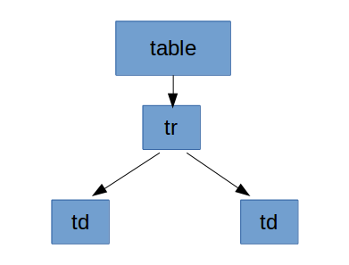
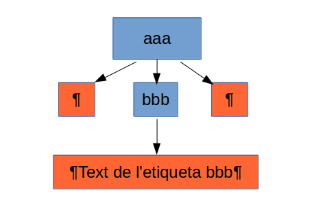

Accés a Dades
4.2 - L'estructura DOM
L’estructura DOM pren la forma d’un arbre, on cada part del XML es trobarà representada en forma de node. En funció de la posició en el document XML, parlarem de diferents tipus de nodes:
- El node principal que representa tot el XML sencer s’anomena Document.
- Les diverses etiquetes, inclosa l’etiqueta arrel, es coneixen com a nodes Element.
- El contingut d’una etiqueta de tipus text, serà un node de tipus TextElement
- Els atributs seran nodes de tipus Attribute.
En l'exemple de la pàgina anterior, el fitxer cotxes.xml , que té aquesta estructura:
Veient-lo com una estructura jeràrquica ens quedaria així:

On:
- El node Document és el rombe
- Els nodes Element són els cercles
- Els nodes TextElement són els rectàngles de fons taronja.
- Els nodes Attribute són els rectàngles arrodonits de color groc
Cada node específic disposa de mètodes per accedir a les seues dades concretes (nom, valor, nodes fills, node pare, etc.). És a dir, que el node serveix per a situar-se en una determinada posició (element, atribut, element de text, ...). Tindrà uns mètodes, sobretot per a navegar, encara que també alguns per a traure el contingut. Element és un classe derivada de Node (per tant hereta tots els seus mètodes), i proporciona algunes coses més, sobretot per a accedir còmodament a les seues parts. Mirem els mètodes més importants, tant deNode com de Element i Document
Mètodes de NODE
| Valor tornat | Mètode | Descripció |
|---|---|---|
| String | getNodeName() | torna el nom d'aquest node |
| short | getNodeType() | torna el tipus d'aquest node (ELEMENT_NODE, ATTRIBUTE_NODE, TEXT_NODE, ... |
| String | getNodeValue() | torna el valor del node, si en té |
| NodeList | getChildNodes() | torna una llista amb els nodes fills |
| Node | getFirstChild() | torna el primer fill |
| Node | getLastChild() | torna l'últim fill |
| NamedNodeMap | getAttributes() | torna una llista amb els atributs del node (null si no en té cap) |
| Node | getParentNode() | torna el pare |
| String | getTextContent() | torna el text contingut en l'element i el de tots els seus descendents, si en té |
| boolean | hasChildNodes() | torna cert si el node té algun fill |
| boolean | hasAttributes() | torna cert si el node té algun atribut |
Mètodes d' ELEMENT
| Valor tornat | Mètode | Descripció |
|---|---|---|
| String | getAttribute( String nom) | torna el valor de l'atribut que té aquest nom |
| NodeList | getElementsByTagName( String nom) | torna una llista de nodes amb tots els descendents que tenen aquest nom |
| boolean | hasAttribute( String nom) | torna cert si l'element té aquest atribut |
Mètodes de DOCUMENT
| Valor tornat | Mètode | Descripció |
|---|---|---|
| Element | getDocumentElement() | torna l'element arrel del document |
| NodeList | getElementsByTagName( String nom) | torna una llista de nodes amb tots els descendents que tenen aquest nom |
Nota
Kotlin ens "suggerirà" canviar molts dels mètodes anteriors per propietats. Per exemple per al mètode getNodeName() ens suggerirà de canviar-lo per la propietat nodeName. Podeu substituir per la propietat o deixar el mètode, el que vulgueu.
Sempre que tinguem unallista de nodes , podrem accedir a cadascun dels membres de la llista amb el mètode item especificant el número d'ordre. Així, si volem accedir al primer posarem item(0)
Posterioment posarem els mètodes que serveixen per anar posant contingut a un document: crear fills, crear atributs, posar contingut, ...
El DOM resultant obtingut des d’un XML acaba sent un còpia exacta del fitxer, però disposat de diferent manera. Tant al XML com al DOM hi haurà informació no visible, com ara els retorns de carro , que cal tenir en compte per tal de saber processar correctament el contingut i evitar sorpreses poc comprensibles.
Per a il·lustrar el problema que poden suposar els retorn de carro, imaginem que disposem d’un document XML amb el següent contingut:
Veurem més clar si representem els retorn de carro en el mateix document:
| ¶ | ¶ |
A la següent figura es mostra la representació que tindria l’objecte DOM, un vegada estiga ja copiat en memòria. Observeu com l’element ** table tindrà tres fills. En un es guardarà el retorn de carro que situa l’etiqueta < tr> a la següent línia, en el segon trobarem l’etiqueta < tr>, i en el tercer el retorn de carro que fa que < /table> estiga en la línia de baix. El mateix passa amb els fills de < tr>, abans i després de cada node < td> trobarem un retorn de carro**.
En canvi, si haguérem partit d'un XML equivalent però sense retorns de carro, el resultat hauria estat diferent:

L’absència de retorns de carro en el fitxer implica també l’absència de nodes contenint els retorns de carro en l’estructura DOM.
Un altre aspecte a tenir en compte és que el contingut de les etiquetes es plasma en el DOM com un node fill de l’etiqueta contenidora. És a dir, per obtenir el text d’una etiqueta cal obtenir el primer fill d’aquesta.
text de l'etiqueta bbb

Llicenciat sota la Llicència Creative Commons Reconeixement NoComercial CompartirIgual 2.5